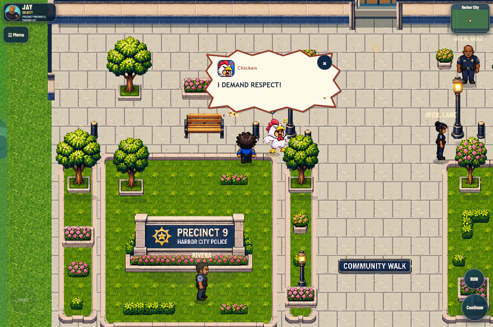
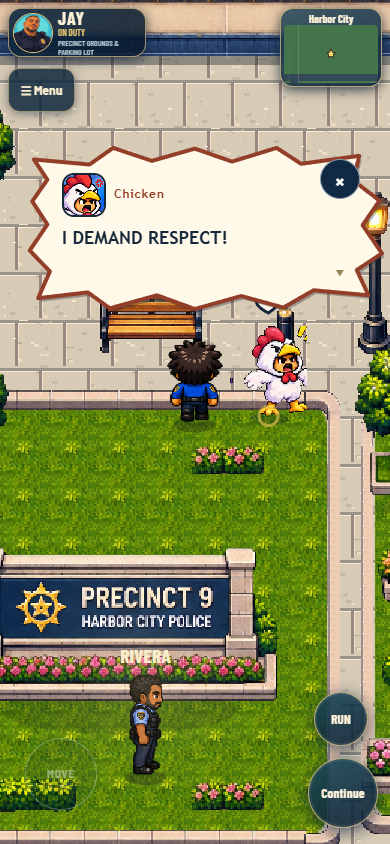
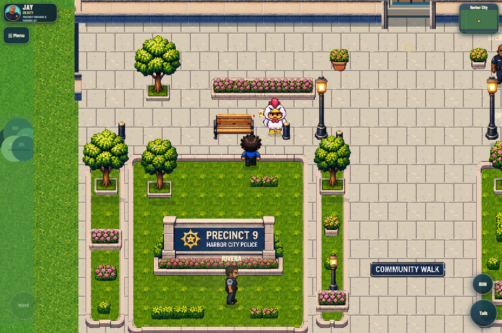
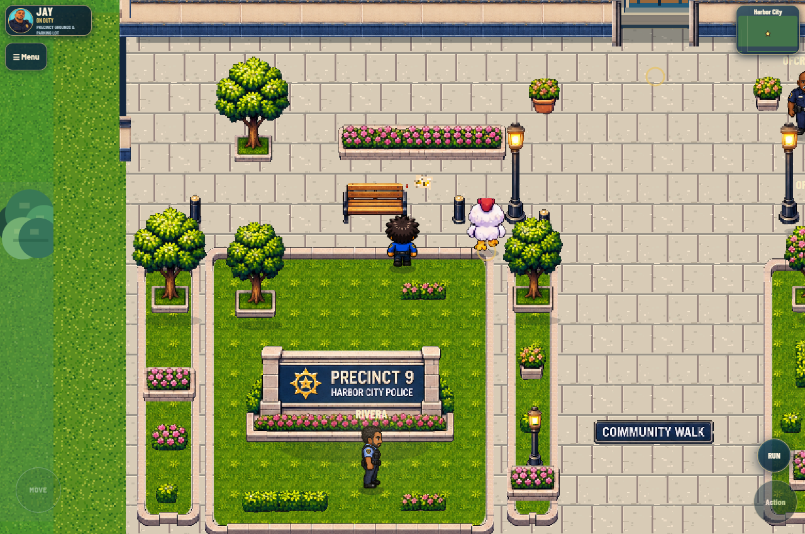

Chicken is in Harbor City
The supplied NPC now walks beside Precinct 9 and speaks through the existing comic dialogue system.
Refresh the preview, choose Chicken NPC · Talk nearby, then press E or tap Talk. Walking, argument poses, expressive portraits and mobile progression passed. Nothing pushed or deployed.

Actual gameplay: argument animation, supplied portrait and anchored comic dialogue.

Mobile portrait: readable dialogue and native tap-to-advance controls.

Down · complete source cell and fixed feet anchor.
Left · same native pedestrian routine.
Right · nearest-neighbor rendering and ground shadow.

Up · correct back view, no automatic mirroring.The owner's pack is prototype artwork. Minor source pose/edge variations remain at large zoom; portraits retain their original backgrounds. Existing Banana prop and story text are preserved. See the report for scope and limitations.